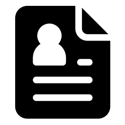
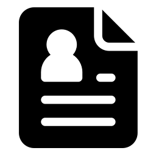
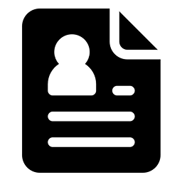

"경험을 규칙으로, 기획을 결과로"
🛠 보유 기술 (Skills)
플러그인을 활용, 복잡한 수준의 AI 그림 생성 가능
페이지 구조화를 통한 기획 문서 작성 및 체계적 정리
UI 구조 설계 및 와이어프레임 제작 가능
기획 검증을 위한 간단한 프로토타입 직접 제작
레벨 디자인, 프리팹 수정 등 기초적인 엔진 조작 수행
기초 함수 활용 및 데이터 관리를 위한 매크로 제작
💡 핵심 역량 상세
추상적인 기획을 구현 가능한
시스템 규칙으로 번역합니다.
게임의 어떤 시스템과 환경이 플레이 경험을 만드는지, 다양한 장르의 게임을 직접 만들어보며 실험해왔습니다.
이를 바탕으로 기획-테스트-수정의 반복을 전제로 사고하며, 플레이 경험을 기준으로 시스템을 설계하는 데 강점이 있습니다.

기획 의도와 개발 우선순위에 맞춰
주어진 과제를 해결합니다.
다양한 게임 플레이, 인디 게임 행사, 게임 잼 등에 참여해 기획자 관점에서의 플레이어 관찰 경험을 쌓았습니다.
이 경험을 바탕으로 과제를 분석할 때 기획 의도, 일정, 중요도 등 다양한 조건을 종합적으로 고려하여 최적의 해결책을 제시합니다.

협업을 위한 문서 작성에 능하고
프로토타이핑을 할 수 있습니다.
기획은 단순한 설명이 아니라 팀원들과 합의를 이끌어내고 구현을 하기 위한 명확한 기준이라고 생각합니다.
노션을 활용한 문서화, 피그마와 디자인 툴을 활용한 시스템 시각화 등을 통해 오해 가능성을 줄이고 구현 속도를 가속화합니다.



Killing Eleven
프로젝트 목표: "경험의 성립을 직접 검증하다"
풋살의 규칙(득점)이 만드는 순간적인 판단력과 난투 액션이 섞였을 때, 흐름이 끊기지 않고 '속도감 있는 전략 액션'으로 성립하는지 머릿속 상상을 넘어 직접 개발을 통해 검증하고자 기획한 프로젝트입니다.
🔄 핵심 기획 의도 및 코어 루프
"단순한 타격이 아닌, 상황이 만드는 전략 액션"
멀리서 고민하는 전략이 아닌, 적/골/공/규칙이 얽힌 상황 속에서 즉시 승리를 위한 판단을 내리는 경험을 의도했습니다.
[다변화된 목표] 승리 목표를 '득점'과 '전적 처치'로 나누어 경기 중 빠른 태세 전환 유도
[오브젝트 활용] 공을 단순한 득점 도구가 아닌 전투의 수단(태클, 슛)으로 활용
[로그라이크 성장] 전투 후 스탯 선택 및 랜덤 장비 획득으로 매 판 다른 플레이 스타일 창출

🚨 트러블슈팅: 기획 의도 기반의 문제 해결

이슈 1. 속도감을 해치는 '킥인(Kick-in)' 규칙 제거
문제: 공이 라인 밖으로 나갈 때마다 킥인 판정으로 인해 난투의 속도감과 흐름이 단절됨.
해결: 킥인 룰을 과감히 제거하고 아웃라인에 벽을 세워 공이 튕겨 나오도록 수정.
결과: 판정 시간이 10초에서 2초로 대폭 단축되었으며, 어디로 튈지 모르는 공의 난반사가 오히려 순간적인 판단(전략성)을 요구하게 되어 기획 의도가 강화됨.

이슈 2. 승리 조건(득점 vs 전멸)의 밸런스 붕괴 현상
문제: 테스트 결과, 두 승리 조건의 무게 균형이 맞지 않아 긴장감 있는 골 공방 대신 '무조건 선수 다 때려잡기'로 목표가 변질됨.
해결: 문제를 즉시 인지하고 원인을 분석하여 포스트모템으로 문서화. 이후 득점의 메리트를 강화하는 방향으로 추가 시스템 보완 기획.
🏆 프로젝트 성과

인디게임 행사 전시 및 유저 관찰
Seoul Game Town 행사에 6시간 동안 프로토타입을 전시했습니다. 현장에서 유저들의 플레이 동선을 직접 관찰하고 피드백을 수집하며, 의도했던 '속도감 있는 전략 액션'이 실제 유저에게 전달되는지 검증했습니다.

개발 회고 및 포스트모템 문서화
개발 과정에서 발생한 기획적 의사결정(킥인 룰 제거, 승패 조건 밸런싱 등)을 포스트모템으로 기록했습니다. 발생한 문제를 단순히 고치는 데 그치지 않고, '왜 이런 결정을 했는지' 대안과 결과를 문서화하여 실무적 자산으로 남겼습니다.
▶️ 플레이 영상 및 기획 의도 해설
"기획이 실제 플레이로 어떻게 구현되었을까?"
좌측 영상은 풋살 규칙과 난투 액션이 결합된 핵심 코어 루프가 실제 게임 내에서 어떻게 작동하는지 보여주는 플레이 영상입니다.
의도적으로 제거된 킥인 시스템 대신 추가된 공의 벽면 난반사와, 다변화된 승리 조건이 만들어내는 순간적인 판단의 재미를 직접 확인해 보시기 바랍니다.
📄 포스트모템 문서 (개발 회고록)
※ 마우스 휠을 내리거나 우측 상단 팝업 버튼을 눌러 전체 문서를 확인하실 수 있습니다.

COCO DOOGY
프로젝트 목표: "추상적인 기획을 구현 가능한 시스템으로 번역하다"
'누구나 쉽게 즐기는 탐험 퍼즐'이라는 팀의 추상적인 기획 목표를 달성하기 위해, 조작(가상 조이스틱), 상호작용(기믹), 보상(수집 요소)의 규칙을 일관성 있게 설계하고 이를 오해 없이 개발로 이어지도록 문서화하는 역할을 수행했습니다.
🔄 주요 기획 의도 및 플레이 설명
"탐험 경험을 정의하고, 퍼즐 시스템을 설계하다"
단순한 퍼즐 풀이에서 끝나지 않고, 플레이어가 직접 '움직이며 발견하는 재미'를 느끼도록 탐험의 경험을 우선적으로 정의했습니다.
[자유로운 이동] 터치 조작 기반의 자유 이동을 채택하여 탐색의 제약을 최소화
[직관적인 상호작용] 이동 자체를 퍼즐의 코어 기믹으로 활용하여 학습 비용을 낮춤
[명확한 목표] 골(Goal)을 찾아가는 길 찾기 중심의 규칙과 수집 요소를 통한 리플레이 동기 부여

🚨 핵심 경험: 일정 방어와 구조적 문서화

이슈 해결: 레벨 디자인을 통한 일정 방어
상황: 프로젝트 중반, 전 구간에 쓰이는 핵심 퍼즐 시스템에 치명적인 버그 발생.
해결: 프로그래머에게 코어 기능 수정만 요청하여 개발 병목을 줄이고, 기획자인 제가 직접 레벨 디자인을 수정하여 버그 구간을 우회 및 은닉했습니다. 결과적으로 마일스톤 지연 없이 전체 개발 흐름을 유지할 수 있었습니다.

협업: '합의'를 위한 시각화 문서 작성
상황: 직군 간의 오해를 줄이고 빠른 구현을 이끌어내야 함.
해결: 노션과 플로우차트를 활용해 시스템 조직도를 한눈에 파악할 수 있도록 도식화했습니다. 개별 기믹 로직과 공통 규칙을 분리하여 작성하고, 복잡한 UI 흐름은 피그마로 시각화하여 프로그래머의 작업 속도를 가속화했습니다.
🏆 프로젝트 성과

"끝까지 책임지는 기획자" - 긍정적 동료 평가
버그 발생 시 남 탓을 하거나 일정을 미루지 않고, 기획자가 할 수 있는 최선의 우회책(레벨 디자인 수정)을 즉각 실행한 점에 대해 팀원들로부터 "문제를 미루지 않고 끝까지 챙긴다", "신뢰할 수 있다"는 높은 평가를 받았습니다.

포스트모템 작성 및 협업 기준 확립
프로젝트 종료 후, 개발 중 발생한 의사결정 이슈와 소통의 문제점을 포스트모템으로 구조화했습니다. 이를 바탕으로 효과가 있었던 시각화 템플릿과 기획서 공유 방식을 정리하여 다음 프로젝트에서도 활용 가능한 실무적 자산으로 남겼습니다.
▶️ 플레이 영상 및 기획 의도 해설
"탐험과 퍼즐이 자연스럽게 교차하는 레벨"
좌측 영상은 기획서에 작성된 '이동 중심의 상호작용'과 '길 찾기 기믹'이 레벨 디자인을 통해 실제 모바일 환경에서 어떻게 구현되었는지 보여줍니다.
가상 조이스틱 하나만으로 퍼즐을 풀고 맵을 탐험하는 직관적인 흐름과, 버그를 우회하기 위해 전략적으로 재배치한 레벨 디자인의 디테일을 영상에서 확인하실 수 있습니다.
📄 협업 문서 및 포스트모템 (PDF)
※ 각 뷰어 안에서 마우스 휠을 내리면 전체 문서를 확인하실 수 있습니다.

FAKE HERO
프로젝트 목표: "제한된 환경 속, 선택과 집중으로 코어 루프 완성"
온라인 게임잼이라는 극도로 제한된 시간과 리소스 환경에서, 팀 리더로서 아이디어를 빠르게 구체화하고 버릴 것은 과감히 버리며 '작동하는 결과물(Playable Build)'을 완성해 내는 것을 최우선 목표로 삼았습니다.
🔄 주요 기획 의도 및 플레이 설명
"직관적인 규칙으로 빠르게 재미를 전달하다"
단기간에 유저를 몰입시켜야 하는 게임잼의 특성에 맞춰, 학습 비용이 거의 없는 직관적인 코어 플레이를 설계했습니다.
[명확한 컨셉] '가짜 영웅'이라는 테마를 플레이어가 즉각적으로 인지할 수 있는 기믹으로 구현
[압축된 텐션] 복잡한 시스템을 배제하고, 짧은 시간 안에 클라이맥스를 경험할 수 있도록 레벨과 웨이브(Wave) 디자인을 압축
[비주얼 피드백] 기획 의도가 플레이어에게 확실히 닿도록, 직접 아트 디자인을 수행하여 시각적 타격감과 피드백 강화

🚨 핵심 경험: 팀 리딩과 실무적 유연성

팀 리더: 스펙 아웃(Spec-Out)을 통한 기획 구체화
상황: 게임잼 초반, 쏟아지는 아이디어로 인해 개발 범위(Scope)가 기하급수적으로 팽창했습니다.
해결: 팀 리더로서 핵심 재미(가짜 영웅 컨셉)와 직결되지 않는 부가 시스템을 과감하게 스펙 아웃 시켰습니다. 구현 가능성을 기준으로 개발 우선순위를 재조정하여 팀원들의 집중력을 코어 플레이로 모았습니다.

유연성: 기획의 구멍을 메우는 아트 디자인
상황: 아트 리소스 제작 인력이 부족하여 개발 속도가 지연될 위기에 처했습니다.
해결: 단순 기획 문서 작성에 머물지 않고, 피그마와 클립스튜디오 등 사용 가능한 툴을 적극 활용하여 직접 아트 디자인 및 UI 소스를 제작해 프로그래머에게 전달했습니다. 직군의 경계를 넘나드는 유연함으로 프로젝트 병목을 해소했습니다.
🏆 프로젝트 성과

완성된 프로토타입(Playable Build) 도출
기획만 번지르르한 미완성작이 아닌, 처음부터 끝까지 코어 루프가 정상적으로 작동하는 완성도 높은 빌드를 제출 기한 내에 성공적으로 만들어냈습니다. 이는 '기획을 결과로 만든다'는 저의 작업 모토를 증명하는 결과물입니다.

비대면 환경에서의 빠르고 효율적인 합의 도출
온라인 환경이라는 소통의 제약 속에서도 디스코드와 노션을 활용한 체계적인 정보 공유를 주도했습니다. 오해가 발생하기 쉬운 텍스트 소통을 넘어, 시각화된 자료를 빠르게 제시하며 팀원 간의 완벽한 합의를 이끌어낸 협업 경험을 쌓았습니다.
▶️ 플레이 영상 및 기획 의도 해설
"기획과 아트가 결합된 즉각적인 피드백"
좌측 영상은 게임잼 기간 동안 팀원들과 협력하여 도출해낸 최종 플레이 영상입니다.
제가 직접 기획하고 디자인한 UI와 아트 소스가 게임 내에서 어떻게 상호작용하는지, 그리고 '가짜 영웅'이라는 테마가 실제 전투 플레이 흐름 속에서 어떤 속도감으로 전개되는지 확인하실 수 있습니다.
📄 게임잼 기획서 및 결과 보고서 (PDF)
※ 뷰어 안에서 마우스 휠을 내리면 전체 문서를 확인하실 수 있습니다.